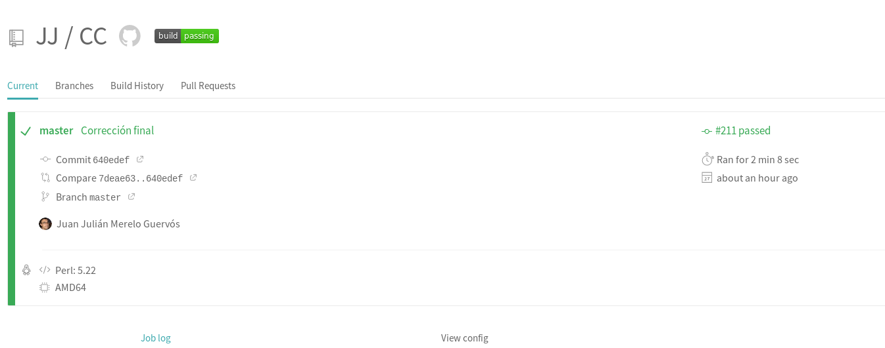
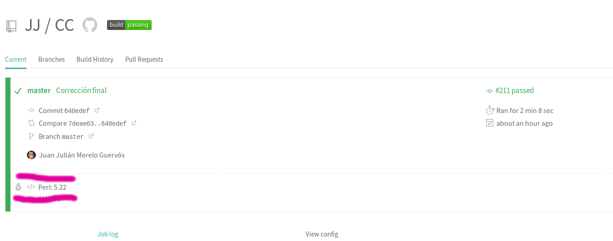
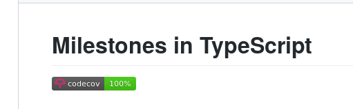
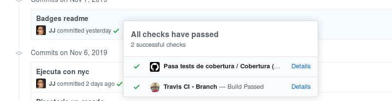
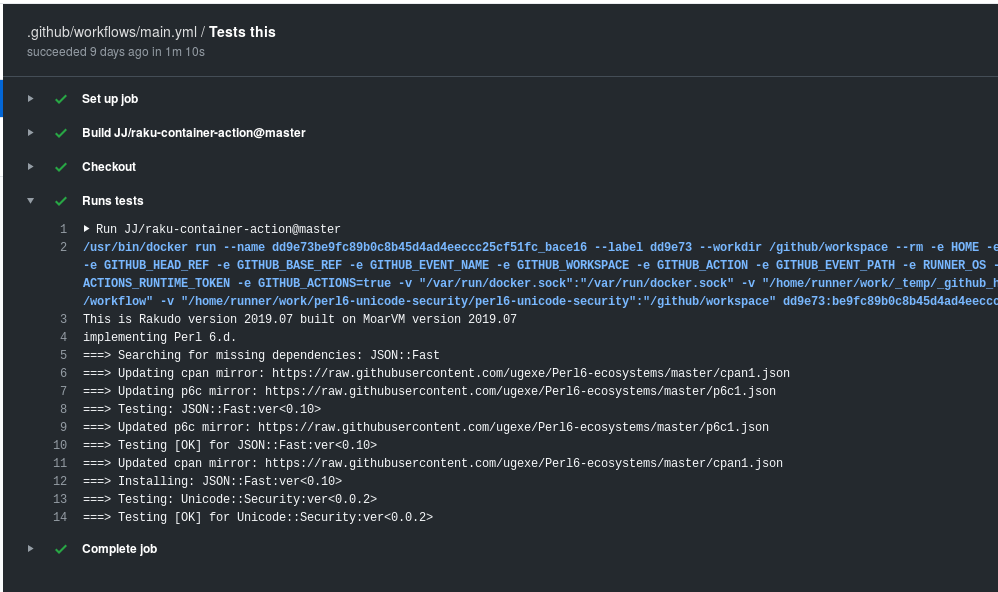
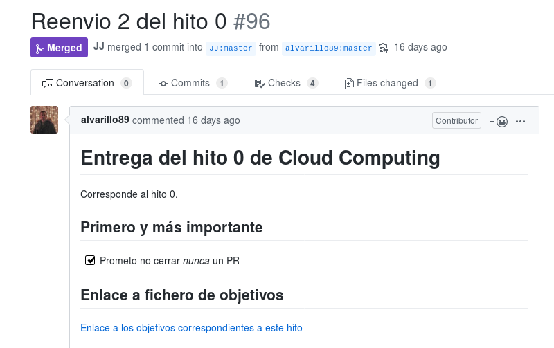
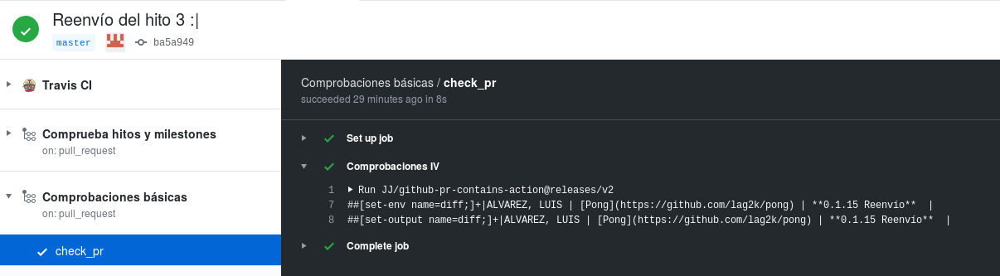
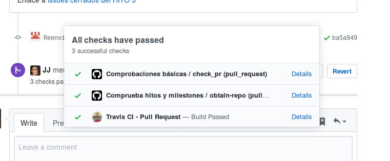
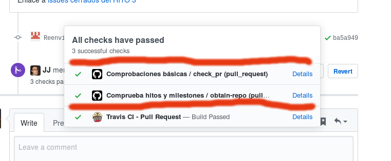

La calidad de la enseñanza
Y las acciones de GitHub
@jjmerelo
Imágenes y texto cc-by-sa
Aprendiendo informática en el siglo XXI
Programando en el siglo XXI
@jjmerelo 🞜 github.com/JJ
Documentator en Raku
Profe en UGR
Enseñanza: asegurar la calidad del aprendizaje del estudiante
Calidad en software: Inherente al proceso
¿Podemos aplicar una gestión de calidad a la enseñanza...
... de la Informática...
... que escale?
La enseñanza es como el desarrollo de software
Material de clase: historias de usuario
Proceso de aprendizaje: proyecto
Entrega: fusión con máster
Evaluación: code review
Aprobado: pasar los criterios de aceptación
¡Manos a la obra!
Material de clase de calidad
Y libre, por supuesto...
La calidad no sólo está en el plato
Sino en la mesa
Y, por supuesto, en el código de ejemplo
 name: Pasa tests de cobertura
on: [push]
jobs:
build:
name: Cobertura
runs-on: ubuntu-latest
steps:
- uses: actions/checkout@v1
- name: Instalación general
run: npm install
- name: Instala tests y cobertura
run: sudo npm install -g jest nyc codecov
- name: Ejecuta tests de cobertura
run: nyc jest --coverage
- name: Crea los informes
run: nyc report --reporter=json > coverage/coverage.json
- name: Sube los tests
run: codecov... en GitHub Actions
GH Actions: gestión de flujos de trabajo
En beta hasta la semana que viene.
Configuración en YAML
+ runtime Node
+ Docker
Con un marketplace de acciones
Hablando de Raku...
on: [push]
jobs:
test:
runs-on: ubuntu-latest
name: Tests this
steps:
- name: Checkout
uses: actions/checkout@v1
- name: Runs tests
id: tests
uses: JJ/raku-container-action@master
Raku en acción
Enseñanza basada en proyecto
Hitos → Pull Requests
Criterios básicos de aceptación
name: "Comprobaciones básicas"
on: [pull_request]
jobs:
check_pr:
runs-on: ubuntu-latest
steps:
- name: Comprobaciones IV
uses: JJ/github-pr-contains-action@releases/v2
with:
github-token: ${{github.token}}
bodyContains: "] Prometo"
bodyDoesNotContain: "Borrar"
filesChanged: 1API de GitHub
¿Cumple los criterios de aceptación?
Acciones de GitHub...
... En acción
¿Qué es el profe?
El que escribe los tests
En TypeScript
//... más cosas
const diffContains = core.getInput('diffContains')
const diff_url = context.payload.pull_request.diff_url
const result = await github.request( diff_url )
const files = parse(result.data)
const filesChanged = +core.getInput('filesChanged')
if ( filesChanged && files.length != filesChanged ) {
core.setFailed( "You should change exactly " + filesChanged + " file(s)");
}
// ... más cosas
Usa el API
Creando un ecosistema
if ( changes.indexOf( diffContains ) < 0 ) {
core.setFailed( "The added code does not contain " + diffContains);
} else {
core.exportVariable('diff',changes )
core.setOutput('diff',changes )
}
Exportando variables
Comprueba proyecto
const diff = process.env.diff as string;
var ghRepoMatch = /github.com\/(\S+)\/(.+?)(:\s+|\))/.exec(diff)
if ( ghRepoMatch === null ) {
core.setFailed("There's no repo URL in this diff")
} else {
const user = ghRepoMatch[1]
const repo = ghRepoMatch[2]
const token = core.getInput('github-token', {required: true})
const github = new GitHub(token, {} )
const milestones = await github.issues.listMilestonesForRepo( { owner: user, repo: repo } )
if ( ! milestones.data.length ) {
core.setFailed("There should be at least one milestone")
} // Más cosas aquí...Usando la acción anterior
CI is coming